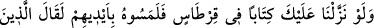
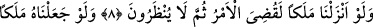
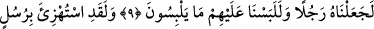
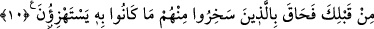
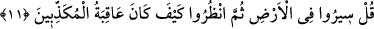

MÜŞRİKLERİN BAHANELERİ
7. Eğer sana kâğıt üzerine yazılmış bir kitap indirseydik de onlar elleriyle onu
tutmuş olsalardı, yine de inkâr ediciler: Bu, apaçık büyüden başka bir şey değildir,
derlerdi.
8. Muhammed’e (görebileceğimiz) bir melek indirilseydi ya! dediler. Eğer biz öyle
bir melek indirseydik elbette iş bitirilmiş olur, artık kendilerine göz bile
açtırılmazdı.
9. Eğer peygamberi bir melek kılsaydık muhakkak ki onu insan sûretine sokar
onları yine düşmekte oldukları kuşkuya düşürürdük.
10. Senden önceki peygamberlerle de alay edilmiş, bu yüzden onlarla alay
edenleri alay ettikleri şey (azap) kuşatıvermişti.
11. De ki: Yeryüzünde dolaşın, sonra (peygamberleri) yalanlayanların sonunun
nasıl olduğuna bakın!
Rivayet edildiğine göre bazı müşrikler: “Ya Muhammed! Bize Allah katından bir kitap
getirmedikçe ve o kitapla beraber dört melek gelip o kitabın Allah katından olduğuna ve
senin de Allah’ın Peygamberi olduğuna şâhidlik etmedikçe sana inanmayacağız.”
dediler. Bunun üzerine Allah bu âyeti indirdi.
“Eğer sana kağıt üzerine yazılı bir kitap indirmiş olsaydık da” onlar bu kitabı
gözleriyle gördükten sonra “ona elleriyle dokunsalardı” ve bu hususta hiç şüpheleri
kalmasaydı “yine de inkâr edenler” delillerle bağlanan kimsenin inatlaşmak âdeti
olduğu gibi hak açıkça ortaya çıktıktan sonra karşı inatlarından dolayı “bu apaçık bir
büyüden başka bir şey değildir.” Bunun sihir olduğunda kimsenin şüphesi yoktur,
“derlerdi.”
Burada özellikle dokunmak zikredilmiştir. Çünkü dokunmada aldatma olmaz. Bir şeye
eliyle dokunduktan sonra hâlâ: “Biz yanlış görmüşüz, göz yanılması olmuş.” demeleri
mümkün olmaz. Dokunma genellikle el ile olduğu halde âyette ellerin de zikredilmesi,